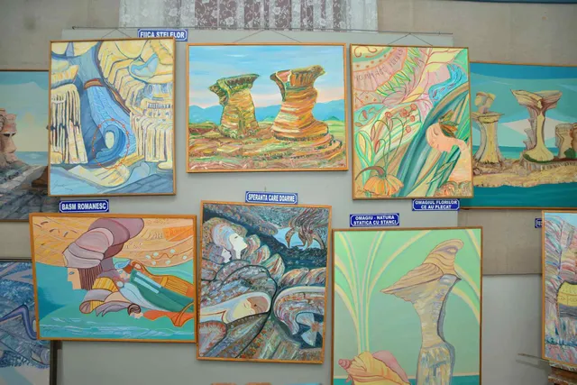
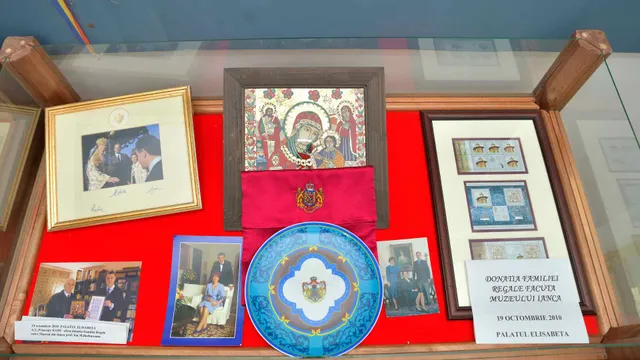
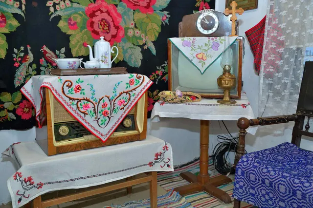
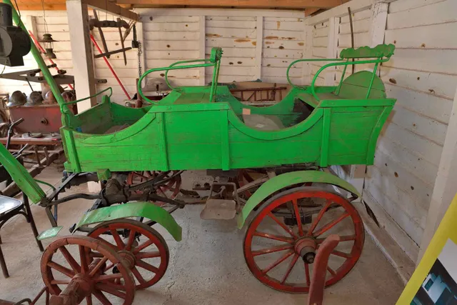

Despre muzeu
Corpurile muzeului



Corpul A
Secția Artă și Expoziții Temporare
Clădire construită la jumătatea secolului al XX-lea și donată de proprietar, până la intrarea României în al Doilea Război Mondial, Administrației Plasei Ianca.
A fost, pe rând, Circă fiscală a Plasei Ianca, iar în timpul războiului, atât pentru germani, cât și pentru ruși, sediu al comandamentului militar zonal. După încheierea războiului a fost sediu al PCR Ianca, al Casei Pionierului și, după Revoluție, al Bibliotecii orășenești.
În anul 1998, Consiliul Local al orașului Ianca, la solicitarea profesorului Ion M. Bărbuceanu, acordă această clădire pentru înființarea unui muzeu în orașul Ianca.



Corpul B
Biserica, Armata, Școala și Viața Satului
Clădire construită în timpul regimului comunist, anexă a Corpului A, spațiu pentru Casa Pionierului. Începând cu anul 1990 aici au funcționat mai multe servicii ale Primăriei Ianca, instituție vecină acestui așezământ.
După mutarea Primăriei în noul sediu de pe Calea Brăilei, acest corp de clădire a fost dat în folosință gratuită muzeului. Cu sprijinul Consiliului Județean Brăila și al Primăriei Ianca (primar Fănel George Chiriță) s-a realizat un acoperiș nou, iar pentru interior muzeul a beneficiat de sprijinul financiar al domnilor Marin Ștefan și Marin Ionuț. Toate încăperile au fost reabilitate spre a fi folosite în scop muzeal.
În holul clădirii se află o expoziție de costume naționale, piese din cultura țărănească și unelte agricole.



Corpul C
Casa țărănească
Casa țărănească a fost strămutată în curtea muzeului din satul Oprișenești. A fost construită de Stan Mortu în perioada 1909–1910. Moștenitorii acestuia au vândut-o familiei Mitrea Stan și Radian, care a construit pe acel teren un complex comercial.
Profesorul Ion M. Bărbuceanu, în înțelegere cu această familie, primește gratuit casa pentru a o aduce în curtea muzeului. În colaborare cu Muzeul Brăilei „Carol I”, cu sprijinul prof. univ. dr. Ionel Cândea, se acordă sprijinul de specialitate pentru valorificarea științifică a casei, prin dr. Brîndușa Ilie, muzeograf la Secția Etnografie. Munca maistrului Radu Nenu și a nepotului său, din satul Plopu, în perioada 2011–2012, a făcut posibilă aducerea casei în muzeu, iar transportul materialelor a fost asigurat de Primăria orașului Ianca.
Interiorul casei reproduce habitatul cotidian al unei familii de țărani din Câmpia Brăilei de acum 100 de ani. Piesele expuse aparțin fondului personal al familiei Ion și Ecaterina Bărbuceanu, strânse din generație în generație de la bunici, părinți, socri și rude apropiate.



Corpul D
Depozitul de unelte
În Depozitul de unelte sunt expuse unelte din zona de câmpie a Brăilei: un car, mai multe căruțe, diferite pluguri și unelte care arată civilizația agricolă specifică acestei zone etnografice.
În curtea interioară a muzeului este amenajat un model de gospodărie țărănească din zonă, unde regăsim bucătăria de vară, umbrarul, fântâna cu cumpănă și ulucul din piatră pentru animale, porumbarul și cotețul pentru păsări. Proiectul a fost realizat cu fonduri AFCN, manager de proiect prof. Ion M. Bărbuceanu.